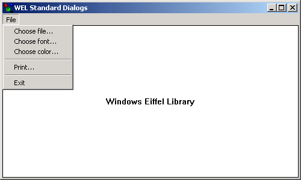

Stddlgs Sample

Compiling
To compile the example:
- Launch EiffelStudio.
- Select Use existing Ace (control file) and click OK.
- Browse to Eiffel50\examples\wel\stddlgs\.
- Choose Ace.ace
- Choose the directory where the project will be compiled, by default the same directory containing the Ace file.
- Click OK.
Running
After launching the program, a window will displayed with a menu allowing you to select some of the standard dialogs provided by WEL.
Under the Hood
on_menu_command has been redefined in MAIN_WINDOW to
display a different standard dialog when each of the menu items is selected.
This sample contains the following classes:
See Also
WEL_OPEN_FILE_DIALOG
WEL_CHOOSE_FONT_DIALOG
WEL_CHOOSE_COLOR_DIALOG
WEL_PRINT_DIALOG